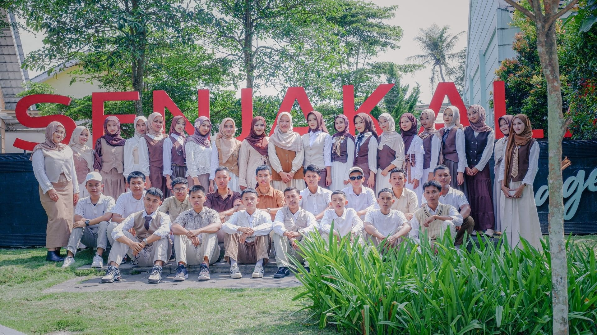
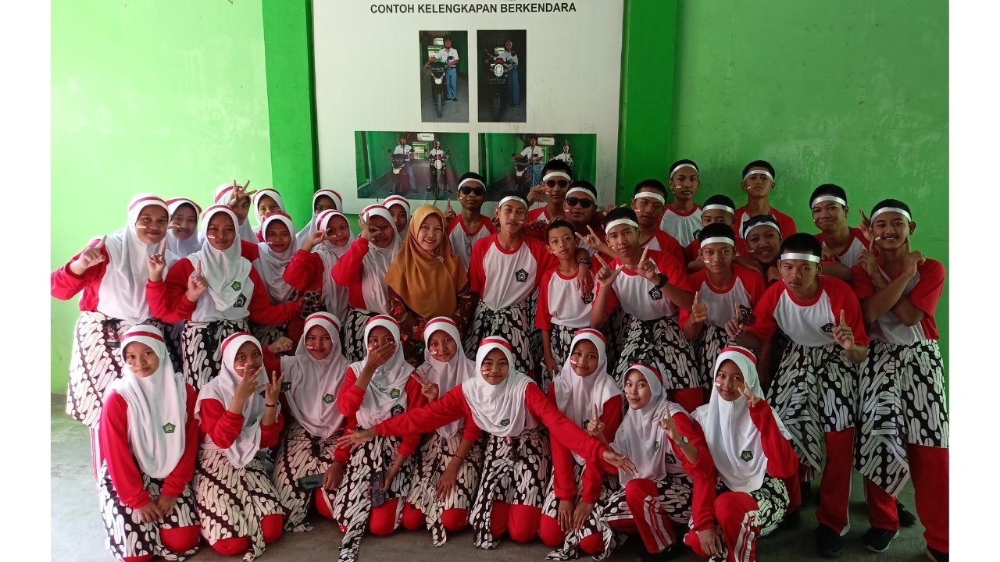
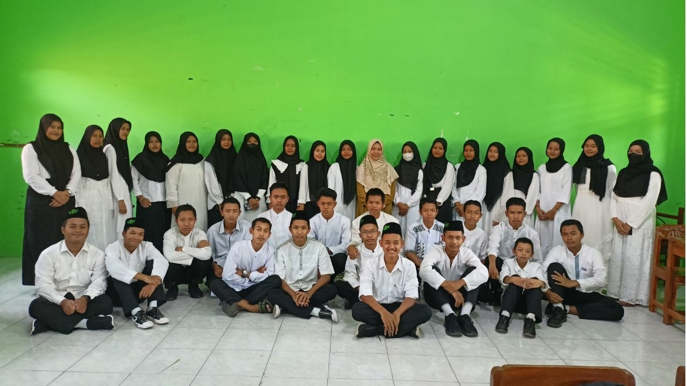
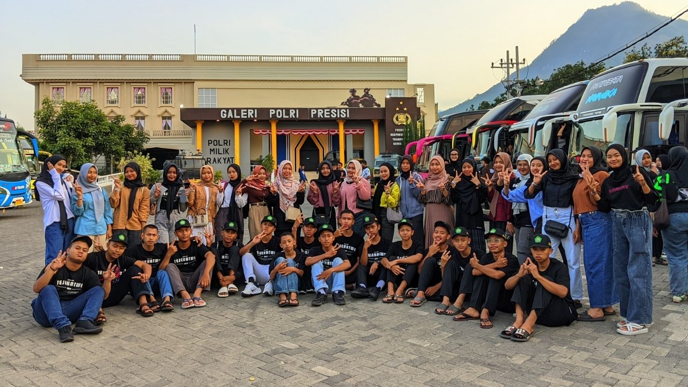
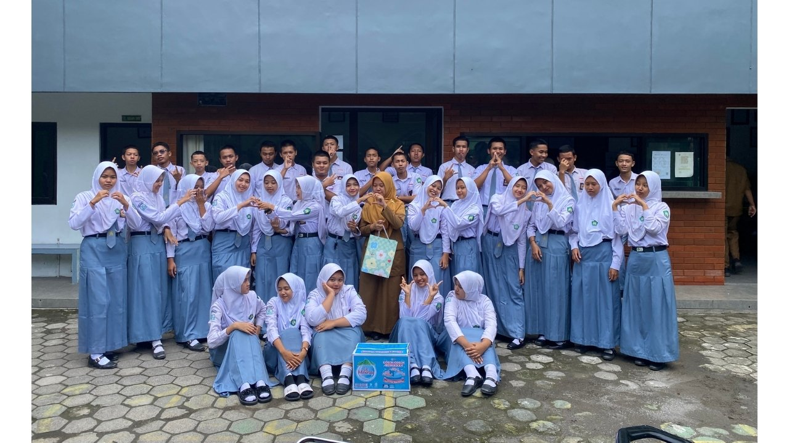
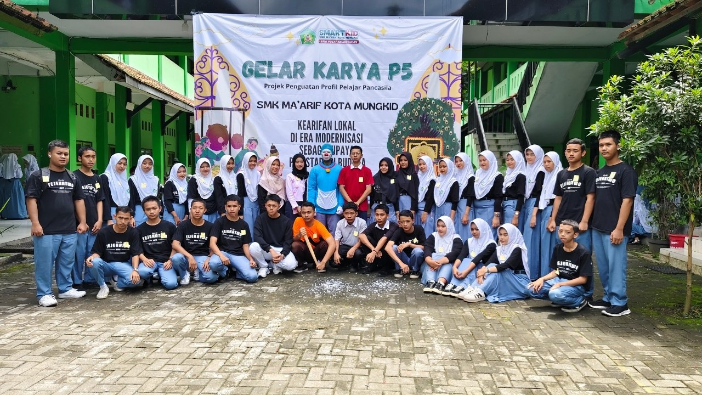
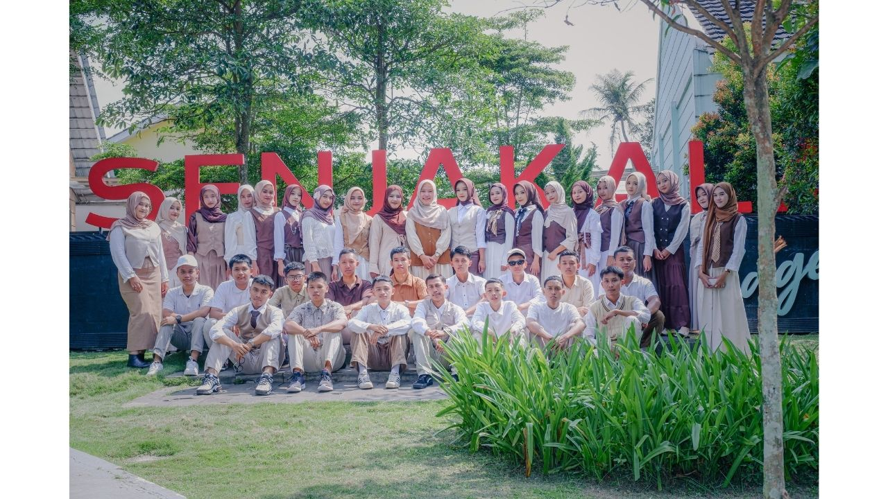

Website TEJEKATWO Resmi Diluncurkan
Website TEJEKATWO sedang dibuat dan akan digunakan sebagai media dokumentasi dan informasi kelas XII TJKT 2.
Baca SelengkapnyaKelas XII TJKT 2 – SMK Ma'arif Kota Mungkid
"Solidarity, Creativity, and Growth Together"

"Selamat datang di website TEJEKATWO – XII TJKT 2. Semoga website ini menjadi wadah untuk berbagi informasi, dokumentasi kegiatan, dan mempererat tali silaturahmi antar siswa. Mari bersama-sama membangun masa depan yang cerah di bidang teknologi."
Update terbaru kegiatan kelas, pengalaman PKL, dan cerita inspiratif dari siswa TEJEKATWO
Website TEJEKATWO sedang dibuat dan akan digunakan sebagai media dokumentasi dan informasi kelas XII TJKT 2.
Baca SelengkapnyaSiswa kelas XII TJKT 2 mulai mempersiapkan diri untuk Praktik Kerja Lapangan yang akan segera dimulai.
Baca SelengkapnyaTEJEKATWO sukses menampilkan drama bertema Doraemon dalam acara Gelar Karya, mendapat sambutan meriah.
Baca Selengkapnya35 siswa berdedikasi yang bersama membangun cerita di XII TJKT 2
Ana Habib Khoirul M. – Bendahara I Isna Nurfadea – Bendahara II
Dokumentasi foto kegiatan dan momen berharga bersama TEJEKATWO






Solid, Kreatif, dan Tumbuh Bersama sebagai keluarga besar TEJEKATWO